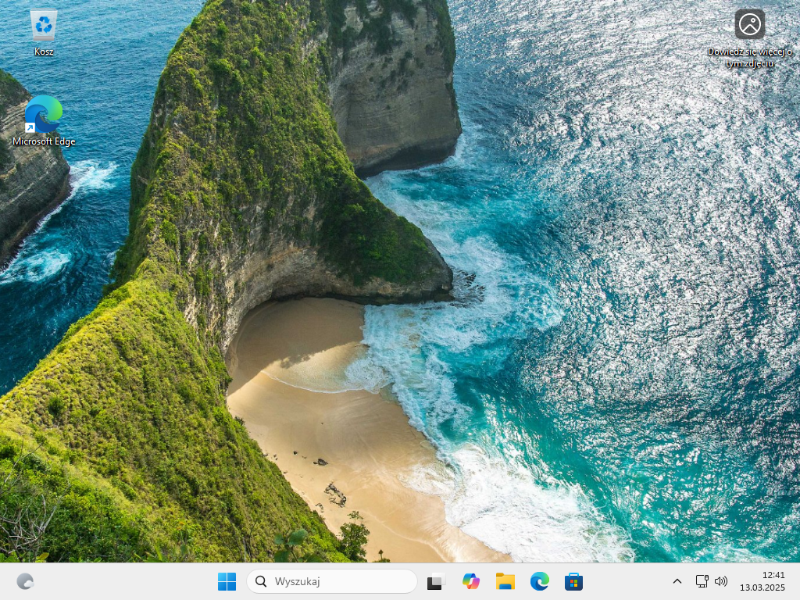
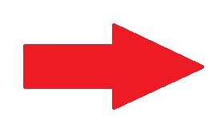
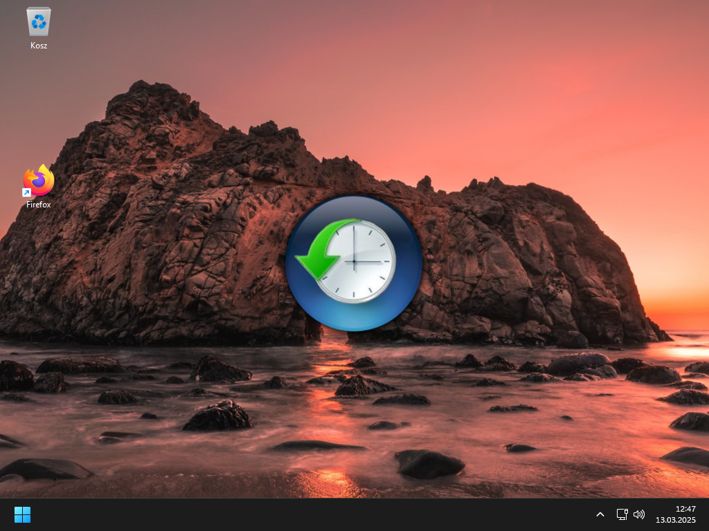

UWAGA! Trzeba wyłączyć antywirusa przed instalacją programu, bo program grzebie w ustawieniach windowsa, itp.
Relive Debloat11 to narzędzie przeznaczone do usuwania zbędnych aplikacji i funkcji z systemu Windows 11,
co pozwala na poprawę wydajności i zmniejszenie obciążenia systemu. Program umożliwia m.in., usuwanie
preinstalowanych aplikacji, wyłączenie telemetrii oraz dostosowywanie interfejsu użytkownika. Dzięki temu
użytkownicy mogą zoptymalizować swoje komputery, eliminując niepotrzebne elementy, które mogą
spowalniać działanie systemu. To rozwiązanie jest szczególnie przydatne dla osób, które chcą mieć większą
kontrolę nad swoim systemem operacyjnym. Ten program jest również przystosowany do osób, które nie
znają się na technologii Po prostu 2 kliknęcia i to działa.

Autor zdjęcia tapety: Freepik
Chris Titus Tech za CCT WinUtil
Raphire za Win11Debloat
ShadowWhisperer za Remove-MS-Edge